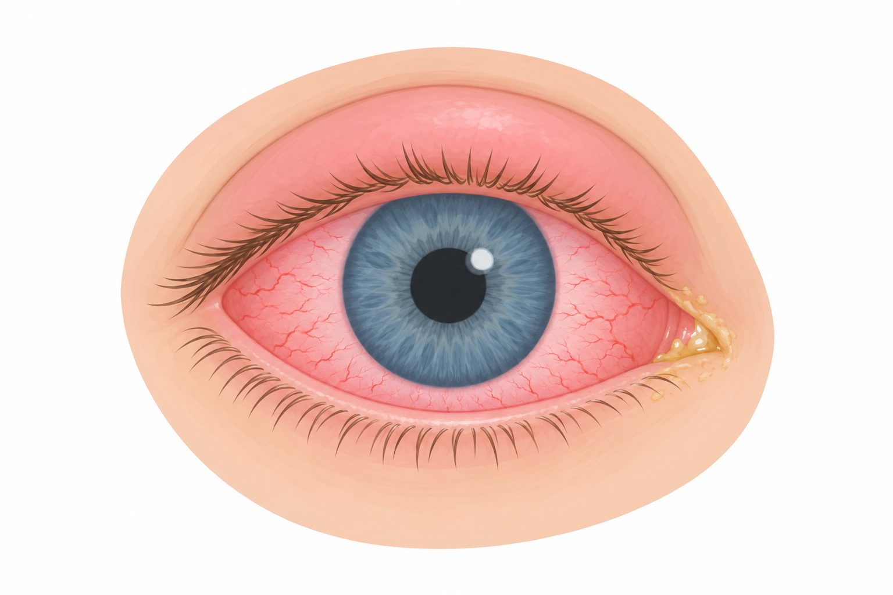
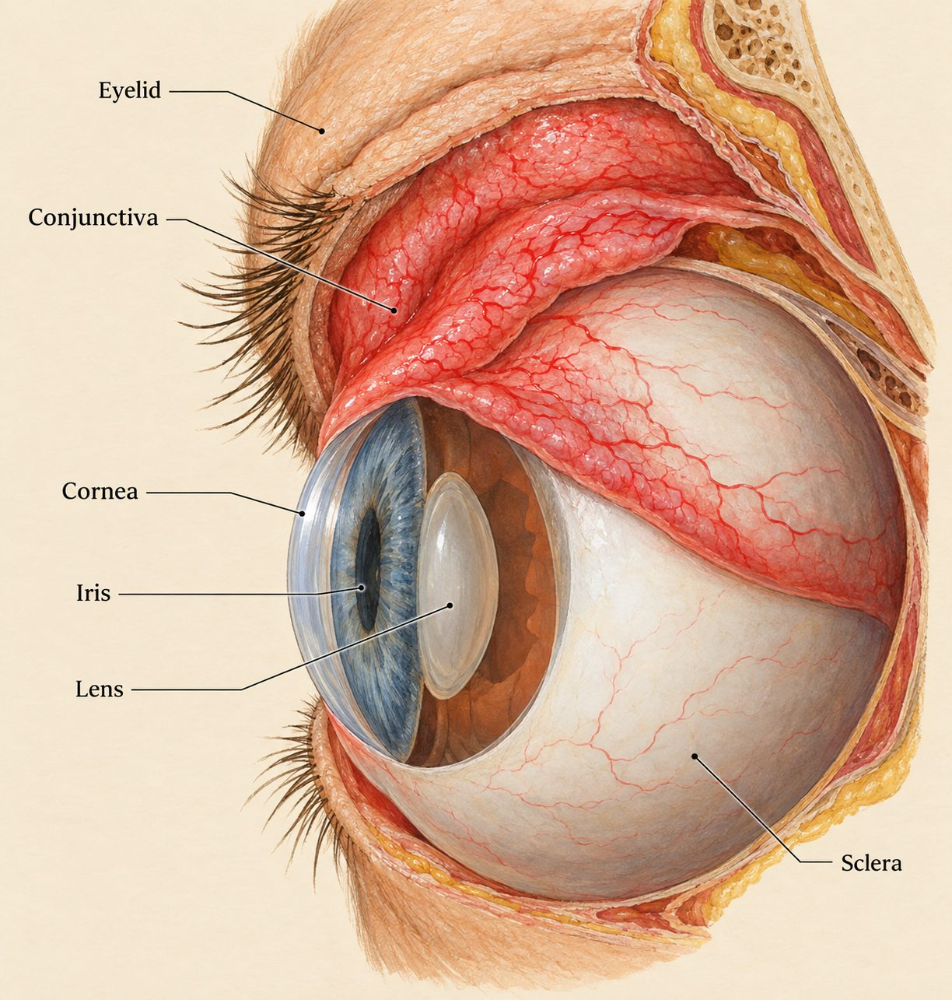
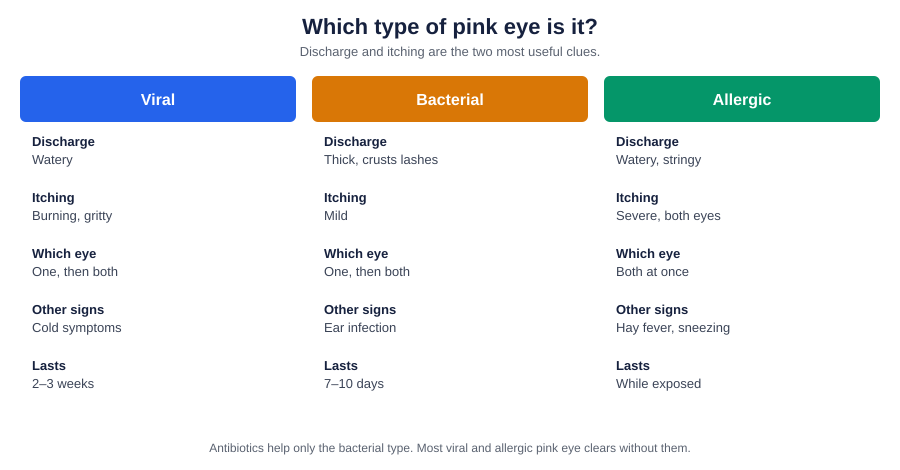
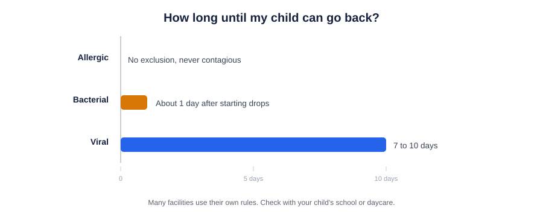
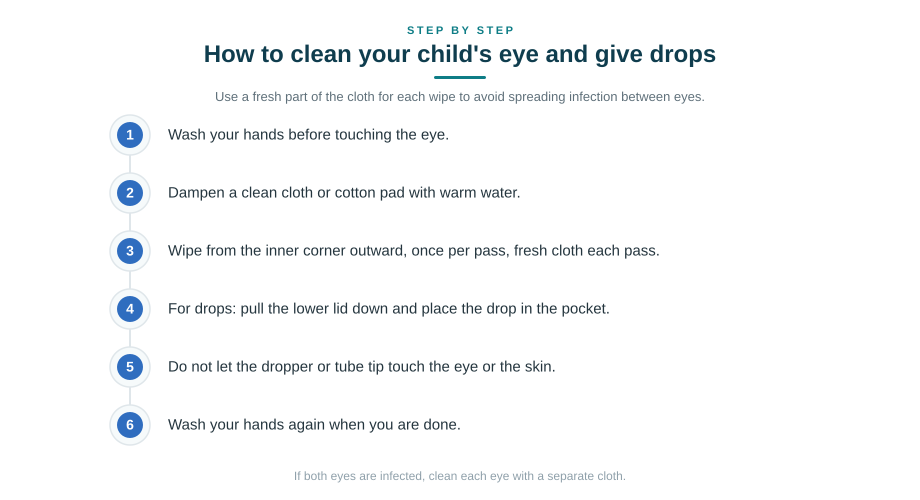

Key Takeaways
- In children, pink eye is often bacterial: a 2023 pediatric review reports more than half of cases, and up to 70% in one meta-analysis, compared with about 16% in adults ([1]).
- Most bacterial pink eye clears on its own in 7 to 10 days; in one trial, antibiotic drops shortened symptoms by less than a day (4.0 versus 3.8 days), and 8% of patients report adverse reactions to ophthalmic antibiotics ([1]).
- A 2023 pediatric review notes that the American Academy of Pediatrics says antibiotics should not be required for return to school or daycare ([1]).
- Red flags that demand in-person care: vision changes, severe pain, eyelid swelling, contact lens wearers, and any newborn ([1]; [10]; [22]).
- About one-third of young children with conjunctivitis also had an ear infection in one study ([2]); in one practice series, oral antibiotics given for this combination cleared the eye symptoms within 2 to 3 days in all but one of 114 episodes ([16]).

A red, gooey eye on a child is one of the most common reasons a parent calls a doctor, and the honest truth is that most pink eye resolves on its own with no antibiotics at all ([12]). This guide explains how to tell the types apart, when medicine genuinely helps, and which symptoms mean your child needs in-person care.
When to Get Emergency Care
Take a child to a pediatric emergency department or urgent in-person eye evaluation for any of these ([1]; [23]):
Newborns (0 to 28 days)
Any eye redness or discharge in a newborn is a medical emergency. Newborns with pink eye symptoms should be seen by a doctor right away ([7]; [10]), and conjunctivitis in a newborn is an acute emergency that needs immediate treatment and referral ([15]). Neonatal conjunctivitis can be caused by Chlamydia trachomatis (approximately 40% of cases), Neisseria gonorrhoeae, or herpes simplex virus ([1]). Untreated gonococcal infection can cause corneal ulcers and blindness ([10]). Do not use telehealth.
Any age (age-independent red flags)
- Vision changes: blurring, refusal to open the eye, extreme light sensitivity ([1]; [8])
- Severe eye pain (not mild irritation; actual pain) ([1]; [23])
- Significant swelling, redness, or warmth of the eyelid or surrounding skin (concern for orbital or preseptal cellulitis) ([22])
- Fever with eye involvement or systemic illness ([22])
- Vesicles (small blisters) on or near the eyelid: possible HSV; needs ophthalmology ([9])
- Recent eye trauma or possible foreign body ([1]; [23])
- Chemical splash: flush with water immediately for at least 15 minutes and go to the ED ([23])
- Contact lens wearer with a red eye: always requires in-person evaluation due to risk of bacterial keratitis and corneal ulcer ([1]; [9])
- High-velocity eye injury (BB gun, paintball, airsoft): common in adolescent males ([1])
Symptoms: How the Three Types Actually Present

Clinical presentation is often nonspecific. A 2003 meta-analysis found no reliable clinical signs to distinguish bacterial from viral conjunctivitis, and in a multicenter study of adults with culture-positive bacterial conjunctivitis, 35% had serous or no discharge ([1]). That said, patterns help.
Bacterial conjunctivitis
Common in children. Purulent discharge, often yellow to green, with eyelids that are mattered and stuck together in the morning; it can affect one or both eyes ([1]). Frequently accompanies an ear infection: in one study of children 2 to 36 months old, 32% had conjunctivitis-otitis syndrome, and H. influenzae grew from 82% of their cultures ([2]).
Viral conjunctivitis
Usually caused by adenovirus. Watery discharge. Burning or gritty sensation. Often starts in one eye and spreads to the other within 24 to 48 hours, and may come with fever, sore throat, cold symptoms, or preauricular (in front of the ear) lymph node swelling. Highly contagious ([1]). It usually clears in 7 to 14 days without treatment, though some cases take 2 to 3 weeks or more ([8]).
Allergic conjunctivitis
Affects approximately 1 in 5 children and is the single most common ocular complaint to pediatric providers. Peaks from late childhood into adolescence. Bilateral itching is the defining symptom. Watery discharge. Often seasonal ([1]). Often comes with other allergy symptoms such as nasal congestion or sneezing, and is common in children with hay fever, asthma, or eczema ([1]; [9]).

The three types at a glance
| Viral | Bacterial | Allergic | |
|---|---|---|---|
| Discharge | Watery | Thick, yellow-green, crusts lashes shut | Watery, stringy |
| Itching | Burning, gritty | Mild | Severe, both eyes |
| Which eye | Often one, then both | One or both | Both at once |
| Other signs | Cold symptoms, node by ear | Ear infection (about 1 in 3 young children) | Sneezing, hay fever |
| Contagious | Yes | Yes | No |
| Treatment | Cool compress, tears | Topical antibiotic if indicated | Antihistamine, avoid trigger |
| Lasts | 7–14 days; some 2–3 weeks or more | 7–10 days | While exposed |
Dangerous mimics to know about
- Herpes simplex keratitis: vesicles on lids or nearby skin; requires antivirals and ophthalmology
- Orbital or preseptal cellulitis: eyelid swelling, warmth, sometimes fever
- Uveitis: severe pain, photophobia, vision change
- Ocular foreign body: sudden onset, often after trauma; nearly half of pediatric ocular foreign bodies involve wood, sand, or dust ([1])
- Corneal ulcer: especially in contact lens wearers
- Neonatal chlamydial or gonococcal conjunctivitis: see "When to get emergency care"
Causes and Pathogens
Bacterial (by age)
| Age band | Common organisms |
|---|---|
| Newborn, first 2 to 5 days of life | Neisseria gonorrhoeae (emergency) ([10]) |
| Newborn, 5 to 12 days after birth | Chlamydia trachomatis (emergency) ([10]) |
| Infants and toddlers (2 to 36 months) | H. influenzae and S. pneumoniae were the main isolates in one prospective study ([2]) |
| Young children with an ear infection | H. influenzae (82% of cultures in one study) ([2]) |
| Children in general | H. influenzae, S. pneumoniae, M. catarrhalis ([1]); CDC also lists S. aureus among causes ([9]) |
Viral: adenovirus most commonly; also herpes simplex virus, varicella-zoster virus ([1]; [9]).
Allergic: pollen, dust mites, animal dander, molds, and other IgE-mediated triggers ([1]; [9]).
Irritant: chemical splash, chlorine, air pollution, foreign body.
When to See a Clinician
May be suitable for telehealth (with a good photograph and clear history):
- Suspected uncomplicated bacterial or allergic pink eye
- No red-flag symptoms
- Child is otherwise well
- Not a contact lens wearer
Requires in-person evaluation:
- Any red flag listed under "When to get emergency care"
- Child under age 5 (young children benefit from in-person evaluation)
- Contact lens wearer
- Recent eye trauma
- Symptoms that get worse or do not improve, or bacterial pink eye that does not improve after 24 hours of antibiotics ([8])
- Recurrent conjunctivitis (repeated episodes) ([1])
- Concurrent ear pain (may need in-person ear exam)
At a Glance: Where to Seek Care
| Situation | Where to go |
|---|---|
| Newborn (0–28 days) with any eye redness or discharge | Emergency department |
| Vision changes, severe pain, eyelid swelling, or blisters near the eye | Emergency department |
| Contact lens wearer with a red eye | In person, same day |
| Fever with eye symptoms, worsening symptoms, or bacterial pink eye not better after 24 hours of antibiotics | In person, same day |
| Clear picture, age 5+, no red flags, good photographs | Telehealth or in-person visit |
| Mild viral or allergic picture, no red flags | Home care, watch and wait |
What's Changed in the Evidence
- A 2023 pediatric review reports that bacteria cause more than half of pediatric cases and cites a 2022 meta-analysis estimating up to 70% ([1]). An American Academy of Pediatrics parent article, by contrast, says most pink eye in school-aged children is viral ([13]).
- A 2025 meta-analysis of 10 clinical trials found better clinical resolution with dexamethasone-containing therapy in infective conjunctivitis ([5]), but topical steroids can raise intraocular pressure, a risk that may increase at young age ([6]), so steroids are not part of routine pediatric care.
- In a study of pediatric conjunctivitis, antibiotic prescribing after online eVisits did not differ significantly from face-to-face visits, while nurse phone-call encounters had a higher prescribing rate ([3]).
Treatment
Bacterial conjunctivitis: should we treat?
This is where clinical judgment matters most. The evidence is worth reading carefully.
Bacterial conjunctivitis is self-limited in the vast majority of cases. A meta-analysis of 11 randomized trials with 3,673 patients found a 10% increase in the rate of clinical improvement with early antibiotic treatment compared to placebo. A more recent Finnish study showed antibiotic drops reduced mean symptom duration from 4.0 days on placebo to 3.8 days on moxifloxacin, a real but small benefit. No differences in sight-threatening outcomes have been seen between treated and untreated groups. Antibiotics are not risk-free: 8% of patients report ocular antibiotic adverse reactions, and studies have found acquired resistance in conjunctival bacteria of children prescribed antibiotics ([1]). The American Academy of Pediatrics notes that antibiotics shorten the course of illness a very small amount and that most children with pink eye get better after 5 or 6 days without antibiotics ([12]).
Antibiotic resistance among these bacteria is common. In a prospective study of children 2 to 36 months old with conjunctivitis, 29% of H. influenzae isolates produced beta-lactamase and 60% of S. pneumoniae isolates were not susceptible to penicillin ([2]).
Given this, three approaches are all evidence-supported for suspected uncomplicated pediatric bacterial pink eye ([1]):
- No antibiotics: supportive care alone
- Delayed treatment approach: waiting before starting an antibiotic
- Immediate antibiotic treatment
In a study of 20 clinicians in Colorado, the main drivers of the choice were the child's clinical presentation, family expectations, antibiotic stewardship concerns, diagnostic uncertainty, and daycare and school policies ([1]).
Antibiotic stewardship
Pediatric antibiotic stewardship in outpatient settings is documented as inconsistent. In a 2022 study of urgent care visits for respiratory tract infections (not pink eye), 82% of encounters for bacterial respiratory infections at a pediatric urgent care center followed guidelines, versus 59% at nonpediatric urgent care centers ([4]). A retrospective study of pediatric conjunctivitis by Mayo Clinic researchers found antibiotic prescribing rates of 41.6% for nurse phone calls, 25.7% for eVisits, and 19.8% for face-to-face retail clinic visits; prescribing after eVisits did not differ significantly from face-to-face visits, while phone-call encounters had the highest rate ([3]).
Families often say antibiotics are needed for a child to return to school or daycare, but the American Academy of Pediatrics notes that antibiotics should not be required for return to care ([1]), and for viral pink eye, antibiotics do not help the patient or reduce spread ([12]). Where the clinical picture is clearly bacterial and treatment adds value, treatment is reasonable; the review describes antibiotics as indicated on an individual basis ([1]).
First-line topical antibiotics if indicated
When treatment is chosen, the 2023 pediatric review suggests starting with erythromycin ointment or trimethoprim-polymyxin B drops ([1]). Labeled dosing for these and two other commonly prescribed eye antibiotics:
| Agent | Dosing | Age approval | Notes |
|---|---|---|---|
| Erythromycin 0.5% ophthalmic ointment | About 1 cm applied to the infected eye(s) up to six times daily, depending on severity ([18]) | Also labeled for preventing eye infection in newborns ([18]) | Starting option in the pediatric review ([1]) |
| Trimethoprim-polymyxin B (1 mg / 10,000 units per mL) drops | Mild to moderate infections: 1 drop every 3 hours (maximum 6 doses per day) for 7 to 10 days ([19]) | Safety and effectiveness below age 2 months not established ([19]) | Starting option in the pediatric review ([1]) |
| Moxifloxacin 0.5% ophthalmic solution | 1 drop 3 times a day for 7 days ([20]) | Label: safety and effectiveness established in all ages ([20]) | Labeled for bacterial conjunctivitis ([20]) |
| Azithromycin 1% ophthalmic solution | 1 drop twice daily, 8 to 12 hours apart, for 2 days, then 1 drop once daily for 5 days ([21]) | Label: safety and effectiveness established in pediatric patients; trial patients were 1 to 87 years old ([21]) | Labeled organisms include H. influenzae, S. aureus, and S. pneumoniae ([21]) |
Symptoms typically improve within 1 to 2 days of starting treatment ([1]). See a clinician if bacterial pink eye does not improve after 24 hours of antibiotics ([8]).
When an ear infection is also present
Bacterial conjunctivitis with concurrent otitis media (sometimes called conjunctivitis-otitis syndrome): in one prospective study, 32% of children 2 to 36 months old with conjunctivitis also had an ear infection, and H. influenzae grew from 82% of their cultures ([2]). In a pediatric practice series of 114 episodes of conjunctivitis-otitis syndrome treated with oral antibiotics, eye symptoms cleared within 2 to 3 days in all but one child ([16]). In a randomized trial of children with bacterial conjunctivitis, oral cefixime was not more effective than topical polymyxin-bacitracin, with no difference in clinical cure or in later ear infections ([17]).
Viral conjunctivitis
Antibiotics will not improve viral pink eye ([8]). Treatment for typical adenoviral conjunctivitis is symptomatic: cool compresses and artificial tears. Emphasize hygiene aggressively. One study of 26 adults with conjunctivitis found adenovirus grown from hand swabs in 46% ([1]). The review advises children with viral conjunctivitis to minimize contact with others for 10 to 14 days from symptom onset ([1]).
HSV conjunctivitis (distinguishable by nearby vesicles) requires antivirals and ophthalmology involvement, not standard antibiotics ([8]; [9]).
Allergic conjunctivitis
Minimize allergen exposure. Topical lubricants (artificial tears) physically wash out allergens. Second-generation topical antihistamines are first-line for mild cases. Combined antihistamine and mast-cell-stabilizing drops (azelastine, olopatadine) are next-step for persistent symptoms. Systemic antihistamines can help when other allergy symptoms are present. Topical steroids are not first-line and should be limited to short courses of 7 days or less under physician direction, given the risk of intraocular pressure elevation ([1]; [6]).
A 2025 systematic review and meta-analysis of corticosteroid use in infective conjunctivitis found better clinical resolution with dexamethasone-containing therapy than with non-corticosteroid treatment (OR 1.51, 95% CI 1.19 to 1.92) and no difference in ocular adverse effects (OR 1.33, 95% CI 0.82 to 2.16) ([5]). However, topical steroids may raise intraocular pressure, and the risk may increase with prolonged use and young age ([6]), so topical steroids should not be started for a child without ophthalmology involvement.
What This Costs (2026, Uninsured)
- Erythromycin 0.5% ointment, 3.5 g tube: GoodRx listed an average retail price of $12.02 and a GoodRx coupon price of $11.79, as of November 15, 2026; prices at individual pharmacies varied ([24]).
- Polymyxin B/trimethoprim and moxifloxacin eye drops: a current cash price for a specific bottle size could not be confirmed when this guide was checked.
Prices are for the medicine itself and do not include a clinician visit or pharmacy dispensing fees. They shift by pharmacy and region; discount coupons often lower them further.
When Can My Child Return to School or Daycare?

A 2023 pediatric review notes that the American Academy of Pediatrics specifically says antibiotics should not be required for return to care ([1]), and AAP parent guidance lists eye discharge without fever, even if the whites of the eyes are red (pinkeye), among conditions where children do not necessarily need to stay home from child care ([14]). In practice, many schools have a policy that a child may return 24 hours after starting antibiotic drops ([13]).
The CDC says: "If you don't have fever or other symptoms, you may be allowed to return with your doctor's approval. You should not attend if you still have symptoms, and if your work or school activities involve close contact with others." ([7]) Its clinician guidance adds: "Infected students should not attend school if they cannot avoid close contact with others." ([9])
Practical expectations:
- Bacterial pink eye: many schools allow return 24 hours after starting antibiotic drops ([13]); the AAP notes the contagious period ends when the medicine is started or when symptoms are gone ([12])
- Viral pink eye: contagious while symptoms are present, and adenovirus may be contagious for weeks; antibiotics do not help the patient or reduce spread ([12])
- Allergic pink eye: not contagious; no exclusion needed once diagnosed ([9]; [12])
The evidence-based approach: prescribe when clinically indicated, and avoid prescribing solely to satisfy a school policy when the picture is clearly viral. When there is genuine diagnostic uncertainty and a return-to-facility note is needed, a clinician may use a delayed prescription with instructions or a note documenting the viral presentation and expected timeline.
Prevention

- Wash hands often with soap and water, especially after touching the eyes ([11])
- Don't share towels, pillowcases, washcloths, or eye makeup ([11])
- Wash pillowcases, sheets, washcloths, and towels often in hot water and detergent ([11])
- Wash sports uniforms and equipment after each use
- Discourage eye rubbing ([11])
- Contact lens wearers: stop wearing contacts until symptoms are gone or the eye doctor says it is okay, and clean, store, and replace lenses as instructed ([11])
Age-Specific Notes
Newborns (0 to 28 days)
Any eye redness or discharge is a medical emergency ([10]; [15]). Neonatal conjunctivitis can be chlamydial, gonococcal, or herpetic ([1]), and untreated gonococcal infection can cause corneal ulcers and blindness ([10]). Do not use telehealth. Congenital nasolacrimal duct obstruction is present in about 20% of infants and can mimic neonatal conjunctivitis ([1]); distinguishing this from infection requires in-person exam.
Infants (1 to 12 months) and toddlers (1 to 4 years)
Bacterial conjunctivitis is common in this group. In one study of children 2 to 36 months old, 32% had a concurrent ear infection ([2]), which changes the treatment plan. See a pediatrician in person; rapid in-person examination matters at this age.
School-age children (5 to 12 years)
Photograph-supported virtual evaluation can be appropriate for uncomplicated cases without red flags. Watch for daycare and classroom outbreaks: adenovirus is highly contagious ([1]) and may uncommonly cause outbreaks in child care and school settings ([12]).
Adolescents (13 to 17 years)
Contact lens wearers require in-person evaluation for any red eye. Adolescent males have elevated risk of high-velocity eye trauma (BB gun, paintball, airsoft) ([1]). Allergic conjunctivitis peaks from late childhood to adolescence ([1]). Consent and confidentiality rules vary by state for adolescents; where applicable, the encounter is documented in accordance with that state's minor-consent statute.
About This Guide
This is general medical education, not a substitute for care from a pediatrician or other clinician who has examined your child. It is reviewed by a physician and updated to reflect current evidence. Always follow the guidance of your child's own clinician.
Frequently Asked Questions
Bacterial and viral pink eye are contagious. Allergic pink eye is not.
Bacterial: usually 7 to 10 days without treatment; in one trial, antibiotic drops shortened symptoms by less than a day. Viral: usually 7 to 14 days, though some cases take 2 to 3 weeks or more. Allergic: usually improves once the allergen is removed.
Amoxicillin is an oral antibiotic, not an eye drop. For pink eye alone, a 2023 pediatric review suggests erythromycin ointment or trimethoprim-polymyxin B drops when treatment is wanted. An oral antibiotic comes into play when a child also has a bacterial ear infection (otitis media), which affected about one-third of young children with conjunctivitis in one study; in one practice series, oral antibiotics given for this combination cleared the eye symptoms within 2 to 3 days in all but one child. Which oral antibiotic to use is your child's clinician's decision.
Often no. Bacterial pink eye usually clears on its own in 7 to 10 days. In one trial, antibiotic drops shortened symptoms by less than a day (from 4.0 to 3.8 days), and 8% of patients using eye antibiotics report adverse reactions. Talk with your child's clinician about the specific presentation and whether treatment adds meaningful value. If your child also has an ear infection, ask whether an oral antibiotic for the ear will also cover the eye.
It depends on the type and the school's policy. A pediatric review notes that the American Academy of Pediatrics says antibiotics should not be required for return, but many schools have a policy that a child may return 24 hours after starting antibiotic drops. The CDC says a child without fever or other symptoms may be allowed to return with a doctor's approval, and should not attend while still having symptoms if school activities involve close contact with others.
Frequent hand washing. Don't share towels, pillowcases, or eye makeup. Wash pillowcases, sheets, washcloths, and towels often in hot water and detergent. Discourage eye rubbing. In one small study, adenovirus was grown from the hands of 46% of adults with conjunctivitis. The American Academy of Pediatrics calls good hand hygiene the best method for preventing spread.
Any of the red-flag symptoms: severe pain, vision changes, significant eyelid swelling or warmth, high fever, or vesicles near the eye. A newborn with any eye redness or discharge should be seen immediately.
No. Contact lens wearers with a red eye always need in-person evaluation to rule out bacterial keratitis and corneal ulcer, which are sight-threatening.
Recurrent conjunctivitis warrants in-person evaluation. Consider allergy, chronic blepharitis, nasolacrimal duct obstruction (in younger children), or contact lens problems.
Only under specific circumstances and preferably with ophthalmology involvement. A 2025 meta-analysis showed better clinical resolution in infective conjunctivitis, but topical steroids can raise intraocular pressure, a risk that may increase at young age, and steroids are not part of routine pediatric conjunctivitis treatment.
References
- Mahoney MJ, Bekibele R, Notermann SL, Reuter TG, Borman-Shoap EC. Pediatric Conjunctivitis: A Review of Clinical Manifestations, Diagnosis, and Management. Children (Basel). 2023;10(5):808. doi:10.3390/children10050808 PMID: 37238356.
- Buznach N, Dagan R, Greenberg D. Clinical and bacterial characteristics of acute bacterial conjunctivitis in children in the antibiotic resistance era. Pediatr Infect Dis J. 2005;24(9):823-828. doi:10.1097/01.inf.0000178066.24569.98 PMID: 16148850.
- Penza KS, Murray MA, Myers JF, Maxson J, Furst JW, Pecina JL. Treating pediatric conjunctivitis without an exam: An evaluation of outcomes and antibiotic usage. J Telemed Telecare. 2020;26(1-2):73-78. doi:10.1177/1357633X18793031 PMID: 30153768.
- Mannix MK, Vandehei T, Ulrich E, Black TA, Wrotniak B, Islam S. Pediatric Antibiotic Prescribing and Utilization Practices for RTIs at Private Urgent Care Centers. Clin Pediatr (Phila). 2022;61(12):830-839. doi:10.1177/00099228221106554 PMID: 35762069.
- Putri LR, Edwar L. Corticosteroid as Treatment in Infective Conjunctivitis: A Systematic Literature Review and Meta-Analysis. J Ocul Pharmacol Ther. 2025;41(4):187-198. doi:10.1089/jop.2024.0110 PMID: 40059644.
- Musleh MG, Bokre D, Dahlmann-Noor AH. Risk of intraocular pressure elevation after topical steroids in children and adults: A systematic review. Eur J Ophthalmol. 2020;30(5):856-866. doi:10.1177/1120672119885050 PMID: 31668084.
- Centers for Disease Control and Prevention. About Pink Eye. Updated April 15, 2024. Accessed November 15, 2026. cdc.gov
- Centers for Disease Control and Prevention. How to Treat Pink Eye. Updated April 15, 2024. Accessed November 15, 2026. cdc.gov
- Centers for Disease Control and Prevention. Clinical Overview of Pink Eye (Conjunctivitis). Updated April 15, 2024. Accessed November 15, 2026. cdc.gov
- Centers for Disease Control and Prevention. Pink Eye in Newborns. Updated April 15, 2024. Accessed November 15, 2026. cdc.gov
- Centers for Disease Control and Prevention. How to Prevent Pink Eye. Updated April 15, 2024. Accessed November 15, 2026. cdc.gov
- American Academy of Pediatrics, HealthyChildren.org. Pinkeye (Conjunctivitis). Source: Managing Infectious Diseases in Child Care and Schools, 3rd Edition (2013). Accessed November 15, 2026. healthychildren.org
- Román H. Do I need to keep my son home if he has pinkeye? American Academy of Pediatrics, HealthyChildren.org. Last updated August 27, 2016. Accessed November 15, 2026. healthychildren.org
- American Academy of Pediatrics Council on Early Childhood, HealthyChildren.org. When to Keep Your Child Home From Child Care. Last updated August 23, 2024. Accessed November 15, 2026. healthychildren.org
- Olusanya B, Baiyeroju A. Emergency management: ophthalmia neonatorum. Community Eye Health. 2018;31(103):61. PMC6253317 PMID: 30487681.
- Bodor FF. Systemic antibiotics for treatment of the conjunctivitis-otitis media syndrome. Pediatr Infect Dis J. 1989;8(5):287-290. PMID: 2631693
- Wald ER, Greenberg D, Hoberman A. Short term oral cefixime therapy for treatment of bacterial conjunctivitis. Pediatr Infect Dis J. 2001;20(11):1039-1042. doi:10.1097/00006454-200111000-00007 PMID: 11734708.
- U.S. National Library of Medicine, DailyMed. Erythromycin ophthalmic ointment USP, 0.5%: prescribing information. Revised March 2025. Accessed November 15, 2026. dailymed.nlm.nih.gov
- U.S. National Library of Medicine, DailyMed. Polymyxin B sulfate and trimethoprim ophthalmic solution: prescribing information. Revised October 2025. Accessed November 15, 2026. dailymed.nlm.nih.gov
- U.S. National Library of Medicine, DailyMed. Moxifloxacin ophthalmic solution USP, 0.5%: prescribing information (repackaged label). Revised October 2023. Accessed November 15, 2026. dailymed.nlm.nih.gov
- U.S. National Library of Medicine, DailyMed. AzaSite (azithromycin ophthalmic solution) 1%: prescribing information. Revised July 2024. Accessed November 15, 2026. dailymed.nlm.nih.gov
- MedlinePlus Medical Encyclopedia. Periorbital cellulitis. Review date December 13, 2025. Accessed November 15, 2026. medlineplus.gov
- MedlinePlus Medical Encyclopedia. Eye emergencies. Review date April 29, 2025. Accessed November 15, 2026. medlineplus.gov
- GoodRx. Erythromycin prices, coupons, and savings tips (3.5 g of 0.5% ointment). Accessed November 15, 2026. goodrx.com